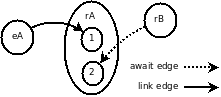
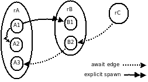

Introduction
LuaGravity is a reactive language that implements the synchronous approach for concurrency. It is roughly based on Esterel and FrTime, two synchronous reactive languages, the former having an imperative style, the latter being functional.
For an introductory video about LuaGravity, click here.
LuaGravity is implemented as a set of runtime extensions to the Lua language. It provides a pure Lua API library with the reactive kernel, and also an extra module with the meta language that is less verbose to use, and is built entirely with the kernel API.
The key concept of LuaGravity is its execution unit, known as reactor. Reactors are comparable to callbacks of event-driven programming, holding the following similarities:
- Reactors run implicitly, always as a consequence of a change in the environment.
- The execution of reactors is atomic and conceptually instantaneous.
However, reactors differ from callbacks in the following characteristics:
- Reactors are themselves events, and can be linked to each other so that a reactor termination triggers its dependent reactors. This eliminates the need to explicitly declare and post events. Conventional events, represented as strings, can still be used when appropriate.
- Reactors are allowed to suspend in the middle of their execution (keeping local state) to wait for other reactors to terminate. This feature permits sequential execution for reactors, while keeping their reactive nature.
Besides standard Lua statements, a reactor can perform the following operations:
- Create new reactors.
- Spawn and kill other reactors.
- Activate and deactivate other reactors.
- Create and destroy links between reactors.
- Await on conditions.
- Generate string events.
(For experienced programmers: Reactors are abstractions built on top of Lua coroutines that count with a specialized scheduler responsible for managing the dependencies between them.)
Reactivity Mechanisms
The link and await primitives are the supported reactivity mechanisms of
LuaGravity.
Follows an introductory example illustrating their use:

rA = luagravity.create(
function ()
print 'a1' -- sub-node (1)
luagravity.await(rB)
print 'a2' -- sub-node (2)
end)
rB = luagravity.create(
function ()
print 'b'
end)
luagravity.link('eA', rA)
We define two reactors rA and rB, linking the string event 'eA' to rA.
This way, rA executes and prints 'a1' whenever 'eA' is triggered, due to
the link between them.
Then, rA awaits the execution of rB.
When rB is executed somewhere, it prints 'b' and awakes rA, which now
prints 'a2'.
The call to await saves the continuation of the running reactor before
suspending it, keeping the locals and point of suspension to be restored on
resume.
The graph is commented further.
(For experienced programmers: The await call yields control from the running
reactor back to the scheduler, telling what should resume itself later.)
As the example shows, string events or reactors can be used as conditions in links and await calls.
The primitive post is used to generate string events:
luagravity.link('key.A', function(key) print(key..' '..pressed))
luagravity.post('key.A')
-- yields "key.A pressed"
Reactors executes implicitly, as consequence of links; or explicitly, as shown further.
The Reactive Scheduler
In LuaGravity, a program is a dynamic dependency graph of reactors waiting for external changes to react. In the graph, nodes are reactors with dependency relations represented by directed edges connecting them.
The scheduling policy of reactors is determined only by the dependency graph, leading to what we call a reactive scheduler.
Starting from an external stimulus, the scheduler traverses the graph running all dependent reactors until it reaches "leaf" reactors. We call this process a full propagation chain, which takes an infinitesimal time to complete. A full propagation chain is also our definition for an instant within the notion of discrete time of synchronous languages.
The two reactivity primitives are responsible for populating the dependency graph with respective kinds of edges:
- Link edges:
Created by
link(X,Y)calls. The edge connects the reactor X (source reactor) to Y (destiny reactor) so that when the source reactor terminates successfully, the destiny reactor is implicitly triggered. - Await edges:
Created by
await(X)calls. The edge connects X (reactor to await) to the continuation of the reactor being suspended. Await edges are temporary, as the scheduler removes them as soon as the suspended reactor is awakened.
In both cases, the parameter X can also be a string event.
In the dependency graph for introductory example the sub-nodes 1 and 2
represent the code chunks of reactor rC separated by the call to await.
Spawning Reactors
Reactors may be explicitly spawned from inside other reactors.
The spawn(r) primitive acts like a fork, instantaneously scheduling the
reactor passed as parameter and the continuation of the calling reactor to run
concurrently.
Follows an example, with corresponding dependency graph, illustrating the use
of spawn:

rA = luagravity.create(
function ()
print 'a1' -- (A1)
luagravity.spawn(rB)
print 'a2' -- (A2)
luagravity.await(rB)
print 'a3' -- (A3)
end)
rB = luagravity.create(
function ()
print 'b1' -- (B1)
luagravity.await(rC)
print 'b2' -- (B2)
end)
rC = luagravity.create(
function ()
print 'c1'
end)
The execution of reactor rA prints 'a1' and spawns the reactor rB (chunk
A1).
The call to spawn immediately schedules rB and the continuation of rA
(chunk A2) to execute concurrently.
The scheduler chooses non-deterministically which one to execute first.
When chunk A2 is executed, it prints 'a2' and awaits the termination of rB,
creating a temporary await edge from rB to the last continuation of rA
(chunk A3).
When rB is spawned, it prints 'b1' and awaits rC, creating the temporary
edge from rC to the continuation of rB (chunk B2).
The execution of rC awakes rB, which, in turn, awakes rA, and both
temporary edges are destroyed.
(Non)Determinism
LuaGravity is single threaded, meaning that any concurrent reactor runs atomically. This way, there are no critical regions in programs and, hence, no need for a locking mechanism.
However, the execution order of concurrent reactors is non-deterministic. In the example below it is not possible to know which spawned reactor runs first:
a = 0
luagravity.spawn(function()
a = a + 1
print(a) -- prints 1 or 2
end)
luagravity.spawn(function()
a = a + 1
print(a) -- prints 1 or 2
end
luagravity.await(0)
print(a) -- prints 2, for sure
Environments
As reactors run as consequence of changes (input events) in the environment, LuaGravity applications must have access to such events. Each environment, which is defined independently from LuaGravity, must document its available input events and also output primitives.
There are two supported execution models for LuaGravity applications:
In the loop execution model, LuaGravity takes control of the environment,
requesting new events from it whenever the applications becomes idle.
The luagravity.loop call receives the application (main reactor) to run, and
a function provided by the environment to requests new events.
luagravity.loop only returns when the application terminates.
The following example uses the ldirectfb environment, which follows the loop execution model:
-- initialization code
local gvt = require 'luagravity'
local ldirectfb = require 'luagravity.env.ldirectfb'
-- event loop
gvt.loop(ldirectfb.nextEvent,
function ()
-- application code
...
gvt.await('key.press.ESCAPE')
...
end)
In the step execution model, the environment takes control of LuaGravity,
issuing steps in the application whenever new events are available.
The luagravity.start call receives the application to run, starts it, and
returns an opaque identifier to be used by the step function.
The luagravity.step call receives the application identifier, the event to
trigger, and a value associated with the event.
A step returns once the full propagation chain reacting to the issued event
terminates, what should take an infinitesimal time.
Follows how the luagravity.loop call can be implemented on top of the step
model:
function luagravity.loop (nextEvent, app)
app = luagravity.start(app)
while app.state ~= 'ready' do
local evt, param = nextEvent()
luagravity.step(app, evt, param)
end
end
The step model permits that several LuaGravity applications coexist, as it does not block.
Known Environments
We try to separate LuaGravity itself from the environments in which it is used. This decoupling eases the adaptation of the language to different realms. For instance, when programming games, the environment typically provides input events for key presses and collisions between sprites, and ways to draw graphical primitives on screen. In a robotics environment, input comes from reading sensors, and output from commanding on actuators; and so on.
Another reason to separate the language kernel from environments is that LuaGravity is implemented in pure Lua, while environments usually require a C module to interact with the operating system and, hence, are not portable.
The Meta Language
We chose to write the LuaGravity kernel as an API supporting every possible mechanism in the language. Above it, we provide a layer extending Lua with the semantics of LuaGravity. This approach follows the usual idea in the Lua world of separating mechanism from policy.
We recommend programmers to use the meta module instead of the
raw API.
Download & Install
The current version of LuaGravity is 0.6.1 and can be downloaded here.
I also keep a github repository here.
Unpack LuaGravity to somewhere in your LUA_PATH, and run the tests:
# cd /somewhere_in_lua_path
# tar xvzf luagravity-0.6.1.tgz
# mv luagravity-0.6.1/ luagravity/
# cd luagravity/tests
# make
Acknowledgements
This work is the result of my period at PUC-Rio as an MSc student supervised by Prof. Roberto Ierusalimschy.
I also maintain a weblog on reactive languages at http://thesynchronousblog.wordpress.com/.
Please contact me if you are using LuaGravity. Also, feel free to ask me for help on how to implement new environments for the language.
License
LuaGravity is free software: it can be used for any purpose, including commercial purposes, at absolutely no cost. No paperwork, no royalties, no GNU-like "copyleft" restrictions, either. LuaGravity is certified Open Source software. Its licenses are compatible with GPL.
The MIT License
Copyright (c) 2009-2010 Francisco Sant'Anna
Permission is hereby granted, free of charge, to any person obtaining a copy of this software and associated documentation files (the "Software"), to deal in the Software without restriction, including without limitation the rights to use, copy, modify, merge, publish, distribute, sublicense, and/or sell copies of the Software, and to permit persons to whom the Software is furnished to do so, subject to the following conditions:
The above copyright notice and this permission notice shall be included in all copies or substantial portions of the Software.
THE SOFTWARE IS PROVIDED "AS IS", WITHOUT WARRANTY OF ANY KIND, EXPRESS OR IMPLIED, INCLUDING BUT NOT LIMITED TO THE WARRANTIES OF MERCHANTABILITY, FITNESS FOR A PARTICULAR PURPOSE AND NONINFRINGEMENT. IN NO EVENT SHALL THE AUTHORS OR COPYRIGHT HOLDERS BE LIABLE FOR ANY CLAIM, DAMAGES OR OTHER LIABILITY, WHETHER IN AN ACTION OF CONTRACT, TORT OR OTHERWISE, ARISING FROM, OUT OF OR IN CONNECTION WITH THE SOFTWARE OR THE USE OR OTHER DEALINGS IN THE SOFTWARE.
API
reactor = luagravity.start (app, param)
Starts the main reactor representing the application. |
luagravity.step (app, evt, param)
Performs an execution step in the application with the given event. |
luagravity.loop (nextEvent, app)
Runs the given application to completion. |
reactor = luagravity.create (body, t)
Creates a new reactor from a function body. |
reactor = luagravity.spawn (reactor, param)
Spawns the execution of the given reactor, passing a parameter. |
ret = luagravity.call (reactor, param)
Executes the given reactor passing a parameter, awaiting its termination. |
luagravity.kill (reactor)
Terminates the execution of the given reactor, cancelling it. |
luagravity.link (src, dst)
Creates a link between src and dst.
|
luagravity.unlink (src, dst)
Breaks the link between src and dst.
|
ret = luagravity.await (r1, r2, ...)
Makes the running reactor await for any condition passed as parameter. |
luagravity.deactivate (reactor)
Deactivates the awaiting reactor passed as parameter. |
luagravity.reactivate (reactor)
Reactivates the reactor passed as parameter. |
return luagravity.cancel
Terminates the running reactor, cancelling it. |
reactor = luagravity.start (app, param)
Starts the main reactor representing the application.
Should be used in conjunction with luagravity.step in the step
execution model.
Parameters:
app: [reactor|function] The main reactor to be executed. Can also be a function, which is transformed into a reactor.param: [any] An optional parameter passed to the application.
Returns:
app: [reactor] A reference to the application.
luagravity.step (app, evt, param)
Performs an execution step in the application with the given event.
A step returns once the full propagation chain reacting to the issued event terminates, what should take an infinitesimal time.
Should be used in conjunction with luagravity.start in the
step execution model.
Parameters:
app: [reactor] The application to step.event: [string] The event to be triggered.param: [any] The value associated to the event.
Returns:
- nothing
luagravity.loop (nextEvent, app)
Runs the given application to completion.
It is equivalent to the following code:
function luagravity.loop (nextEvent, app, param)
app = luagravity.start(app, param)
while app.state ~= 'ready' do
local evt, param = nextEvent()
luagravity.step(app, evt, param)
end
end
The function nextEvent blocks until a new event is returned from the
environment.
The call to loop only returns after the application terminates.
See also the loop execution model.
Parameters:
nextEvent: [function] An environment dependent function that requests new events.app: [reactor|function] The main reactor to be executed. Can also be a function, which is transformed into a reactor.param: [any] An optional parameter passed to the application.
Returns:
- nothing
reactor = luagravity.create (body, t)
Creates a new reactor from a function body.
The reactor body must follow the signature:
function ([obj], param) ... end
Parameters:
body: [function] The actual code to be executed by the reactor.t: [table] An optional table supporting the following fields:name: [string] reactor's name (for debugging purposes only).obj: [table] if set, the reactor body is always called withobjas its first parameter.inst: [boolean] sets whether the reactor is instantaneous, that is, if its body contains noawaitcalls. In this case LuaGravity performs an important optimization, not creating a coroutine to run it.
Returns:
ref: [reactor] A reference to the created reactor.
The inst parameter allows an important optimization for reactors that do not
await on their bodies. However, for reactors that do await, this parameter must
be passed false.
reactor = luagravity.spawn (reactor, param)
Spawns the execution of the given reactor, passing a parameter.
The spawned reactor runs concurrently with the continuation of the running reactor.
Parameters:
reactor: [reactor] Reactor to execute. May also be an anonymous function that is automatically transformed into a reactor.param: [any] Parameter to pass to the reactor.
Returns:
reactor: [reactor] A reference to the spawned reactor.
ret = luagravity.call (reactor, param)
Executes the given reactor passing a parameter, awaiting its termination.
The callee reactor continues its execution only after the called reactor and all reactions to it terminate.
Parameters:
reactor: [reactor] Reactor to execute.param: [any] Parameter to pass to the reactor.
Returns:
ret: [any] The return value of the called reactor.
luagravity.kill (reactor)
Terminates the execution of the given (awaiting) reactor, cancelling it.
Reactors linked to (or awaiting) it are not triggered.
Parameters:
reactor: [reactor] Reactor to kill.
Returns:
- nothing
luagravity.link (src, dst)
Creates a link between src and dst.
A link determines that the termination/post of the reactor/string event src
triggers the reactor dst.
The returned value of src is passed to the body of dst.
Cancelled or killed reactors do not trigger
reactors linked to it.
If a source reactor links to several destiny reactors, its termination makes all of them to run concurrently.
Parameters:
src: [reactor|string`] Source reactor or string event.dst: [reactor] Destiny reactor. May also be an anonymous function that is automatically transformed into an instantaneous reactor.
Returns:
- nothing
luagravity.unlink (src, dst)
Breaks the link between src and dst.
Parameters:
src: [reactor|string] Source reactor or string event.dst: [reactor] Destiny reactor.
Returns:
- nothing
ret = luagravity.await (p1, p2, ...)
Makes the running reactor await for any condition passed as parameter. Further actions in the running reactor are not executed until it is awakened.
Conditions might be the termination of reactors or posting of string events. A number may also be passed as parameter to make the running reactor await this number of milliseconds.
The call returns the return value of the reactor responsible for awaking the suspended reactor.
Parameters:
...: [reactors|strings|numbers] Conditions to await.
Returns:
ret: [any] The return value of the satisfied condition.
luagravity.deactivate (reactor)
Deactivates the awaiting reactor passed as parameter.
A deactivated reactor is not resumed when the event it is awaiting is triggered. If the reactor is awaiting on Timers associated to deactivated reactors are paused.
Parameters:
reactor: [reactor] The reactor to deactivate.
Returns:
- nothing
luagravity.reactivate (reactor)
Reactivates the deactivated reactor passed as parameter.
Parameters:
reactor: [reactor] The reactor to reactivate.
Returns:
- nothing
return luagravity.cancel
Terminates the running reactor, cancelling it.
Reactors linked to (or awaiting) it are not triggered.